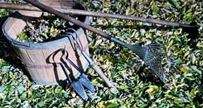

You can save money and find better quality tools by seeking outolder, used garden tools.
Older shovels and hoes are often stronger than modern versionsbecause they were forged from one piece of solid metal. Where canyou buy used tools? Flea markets, garage sales, auctions, estatesales, barn sales and second-hand stores are good places to start.The prices can vary, but you can usually buy common tools for lessthan $15.
The trick to buying secondhand garden tools is to look for solidconstruction on any welded points and pay special attention towhere the metal attaches to the handle. If a tool has parts thatare supposed to move, make sure they do. Another thing to look foron metal is heavy pitting and flaking, which weakens the metal sothe tool might be better suited for decoration than gardenwork.
When shopping for edge tools like hoes or shovels, take along afile to test
the quality of the steel. If the file cuts rapidly with minimalpressure,
the blade is made of soft metal that won't stand much use.
Check that the handle is securely attached and be sure that it isnot badly cracked or splintered. Inspect for cracks, past repairsand rotting. Watch out of handles and metal parts that have beenrepainted ? the paint may be covering up cheap construction ordamage.
|
 |
|
|